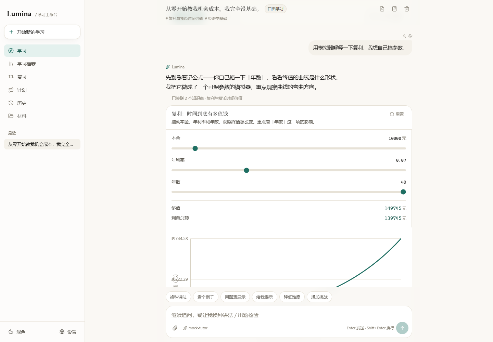
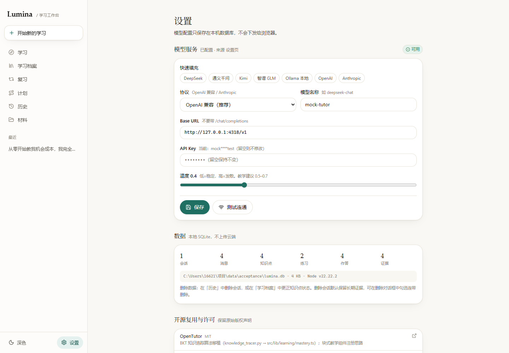

对话驱动的自适应导师：教学闭环、练习判题、学习证据与掌握度追踪
这是一个完成度明显高于常见“AI 套壳项目”的作品。它没有把模型输出直接当教学结果，而是把答案、评分规则、掌握度推导全部收回服务端，并用 8 个白名单工具约束模型的输出形态。端到端链路（流式回答 → 工具出题 → 服务端判题 → 写证据 → BKT 更新 → 跨会话保留）在真实浏览器里跑通了，91 项自动化断言全绿。
但它有一个必须修的问题：“删除会话并连带删除证据”之后，知识点上的掌握度与证据计数没有重算，档案里会留下一条证据已经不存在、却仍显示“已作答 3 次、p=0.49、正在学习”的幽灵记录。对于一个把“证据可追溯”当作核心卖点的产品，这不是小瑕疵。此外，复习调度的难度/遗忘参数在调用处被写死、每轮提示词重复注入用户消息、以及证据标记依赖前端自报，都会让“可信”二字打折扣。
全部验证在独立端口（3211）与独立数据目录中进行，未触碰已有实例与用户数据。
| 验证项 | 实际执行 | 结果 |
|---|---|---|
| 构建 | CODEBUDDY_SAFE_DELETE_ENABLED=0 npm run build（Next 16 / Turbopack） | 通过，14 静态页 + 22 API 路由 |
| 单元测试 | npm test，2 个文件 | 31 通过 / 0 失败（451ms） |
| 端到端 | tests/smoke.mjs 指向 3211 实例 + 4318 测试替身模型 | 28 通过 / 0 失败 |
| 浏览器 | tests/ui-check.mjs，本机 Edge 无头模式，1440×1000 与 390×844 | 32 通过 / 0 失败，无控制台错误 |
| 代码审查 | 数据层、判题、BKT、调度、模型适配、22 个 API 路由、中间件、启动脚本 | 发现 1 项 P1、5 项 P2、6 项 P3 |
| 缺陷复现 | 临时探针（vitest + 独立 DATA_DIR）实测三处逻辑，测后已清理 | 3 项全部复现 |
说明：端到端与浏览器测试使用项目自带的确定性测试替身模型，验证的是应用自身代码路径与交互，不代表真实模型的教学质量。这一点项目文档自己也写明了，态度值得肯定。
| 维度 | 权重 | 得分 | 分布 | 依据 |
|---|---|---|---|---|
| 功能完整性 | 25 | 24 | 宣称的 8 题型、8 工具、材料解析、计划、复习、工作区均存在且可用 | |
| 教学闭环与判题 | 20 | 19 | 答案不下发、服务端判题、开放题降级不伪造、幂等设计 | |
| 学习证据与掌握度 | 15 | 11 | BKT 与审计链扎实，但聚合不重算、调度参数失效、证据可自报 | |
| 工程质量 | 15 | 13 | 0 个 any、0 个 console.log、0 个 TODO；repo.ts 偏臃肿 | |
| 安全与健壮性 | 10 | 7 | 答案隔离与路径清洗到位；默认监听全网、无安全头、信息暴露 | |
| 文档与合规 | 10 | 9 | README、开源调研、第三方许可声明完整；表数量表述有漂移 | |
| 测试覆盖 | 5 | 4 | 91 项断言全绿；API 层无单元测试、无覆盖率度量 | |
| 合计 | 100 | 87 | B+ / 有条件通过 |
按影响排序。每条都给出可定位的文件、复现证据与修复方向。
deleteSession(id, { withEvidence: true }) 只删掉 attempts / exercises / evidence 三张表的行，却没有回写 concepts 上的 evidence_count、p_mastery、status、wrong_streak 等聚合字段。结果是证据已经不存在，档案仍然显示旧的掌握度。
同一路径还会留下指向已删除证据的复习条目（review_items），理由是“连续 2 次答错”，但那两次作答已经被删了。
untouched / 0.1），并清理相关 open 状态的复习条目；重算逻辑抽成一个函数，供“删会话”“删单条证据”共用。scheduleNext() 本身实现没问题，但调用时传的是 difficulty: 5、lapses: 0、reps: concept.evidenceCount。于是每次调用都从“难度 5、遗忘 0 次”重新开始：难度永远在 5 附近抖动，遗忘次数记一次就被下一次清零。
实际效果是调度退化成“只看 stability 的间隔增长”，README 里“FSRS 启发式、难度与遗忘参与调度”的描述只兑现了一半。
concept.difficulty / concept.lapses / concept.reps；补一条“连续答错应让间隔收敛”的回归测试。用户消息在构建提示词之前就已写入数据库，buildHistory() 会把它读进历史；随后 buildTeachingMessages() 又在末尾追加了一次同样的文本。中间那条刚创建的 status: "streaming" 空助手消息则被渲染成 （空）。
每轮多付一次输入 token 是小事；更要紧的是模型看到“用户连说两遍、中间夹一条空回复”，容易重复回答或误判轮次。
buildHistory() 跳过 content 为空且 status=streaming 的助手消息。/solution 明确不写任何服务端状态，提交时 viewedSolution 与 usedHint 由请求体决定。也就是说，先调一次 /solution 拿到答案，再以 viewedSolution: false 提交，这次作答会被当成“独立完成”计入掌握度。
对单机自用工具，这可以解释为“防君子不防小人”；但这个产品的核心卖点就是“可追溯、可信的学习证据”，证据链第一环由被考核者自己填写，逻辑上是闭环不了的。
/solution 在服务端给 exercise 或 block 打一个 solution_viewed_at 标记，提交时以服务端标记为准；提示同理，用服务端发放记录覆盖客户端布尔值。idempotencyKey: uuid() 在 submit() 内部生成，两次调用必然得到两个不同的键。目前只靠 pending 状态挡重复点击，而 setPending(true) 是异步渲染，快速连点存在竞态窗口；网络层的自动重试同样会拿到新键。
README 写的“重复点击 / 重复提交只计一次证据”，严格说只对“同一个键的重复请求”成立，而客户端并不会复用这个键。
不带 APP_ACCESS_TOKEN 时中间件直接放行，而 next start 默认绑定 0.0.0.0。启动日志实测显示 Network: http://10.12.126.88:3211，同一局域网内任何人可读写学习档案、改模型配置。
在此基础上：/api/system 返回数据库绝对路径、Node 版本与平台；/api/ai/test 会把模型返回内容回显，而 baseUrl 可由设置接口改成任意地址——等于给内网探测提供了一个低带宽的读取通道（代码审查结论，未做攻击验证）。
127.0.0.1，或首次启动自动生成随机 token 并在控制台打印访问链接；/api/system 去掉路径等敏感字段；ai/test 的 detail 截断并脱敏；补 CSP / X-Frame-Options / Referrer-Policy。刻度文字以 x = pad.l - 6 = 36 右对齐，而左边距只有 42；八位数（如 19744.58）向左展开约 42px，直接越出 SVG 视口。截图里 19744.58 左侧被切、6522.29 与竖排轴标题叠在一起。
无论 parseMaterial() 返回 failed 还是 unsupported，路由都会把原始文件写进 data/uploads。超过 20MB 被拒的文件也一样。界面上没有“材料管理/删除”入口（DELETE 接口存在但未接入 UI），文件只进不出。
parsed 时不落盘；或提供材料列表与删除按钮，并在设置页展示占用空间。判定条件是 evidence_count = 0。用户如果练习过、但每次都看了解析（按设计不计入掌握度），该知识点的 evidence_count 仍为 0，会被一键清理掉；清理时 attempts.concept_id 被置空，作答记录还在，但已经指不回任何知识点，审计链断掉。
单文档最多 400 个切片，searchMaterialChunks() 每次对话都 select 全表再在 JS 里 includes。材料达到几十份时，每条消息都要搬运数万行文本。README 已声明“关键词检索而非向量检索”，但没有提到这个全表扫描的实现代价。
LIKE 过滤再加权重排序。README 称数据模型为“21 张表”，实测数据库为 23 张（即使剔除 schema_migrations 与 users 才是 21，读者按字面理解会对不上）。构建有 2 条警告：middleware 约定在 Next 16 已弃用（应迁移到 proxy）；Turbopack 因 dataDir() 里的动态路径把整个项目纳入 NFT 追踪。
src/middleware.ts 迁移为 proxy.ts；给 path.join(process.cwd(), 'data') 加 turbopack 静态作用域或忽略注释。仓库没有 .git，也没有 CI 配置；package.json 未声明 engines，而启动脚本实际上要求 Node 20+；pdf-parse 仍停留在 1.1.1（多年未更新，且以“加载测试文件失败”闻名）。这些不影响当前运行，但会让复现、回滚和协作变困难。
engines.node >= 20；评估 PDF 解析替换方案（如 pdfjs-dist）。不是只看断言：用本机 Edge 无头模式真实作答、拖动滑块、刷新恢复，并逐页检查控制台。


exercises.answer，下发的 ExercisePublic 不含答案；端到端断言里专门有一条“响应中不含 answer 字段”。any、0 个 console.log、0 个 TODO/FIXME、无硬编码密钥；模拟器表达式用自研词法/语法分析，明确不用 eval。THIRD_PARTY_NOTICES.md 连“为什么没用某个库”都写了，并附 MIT 原文；docs/OPEN_SOURCE_RESEARCH.md 记录了检索方式、star 数、源码级结论与取舍。| 序号 | 事项 | 级别 | 建议节奏 |
|---|---|---|---|
| 1 | 删除会话后重算知识点聚合与复习队列 | P1 | 本次放行前 |
| 2 | 复习调度传入真实 difficulty / lapses | P2 | 本次放行前（改动小） |
| 3 | 修掉提示词重复注入与空助手占位 | P2 | 本次放行前（改动小） |
| 4 | 解析查看 / 提示使用改为服务端留痕 | P2 | 首次对外分发前 |
| 5 | 默认绑定本机 + 首次启动生成令牌 + 收敛 system 接口 | P2 | 首次对外分发前 |
| 6 | 稳定幂等键，覆盖真实重复提交 | P2 | 下一迭代 |
| 7 | 图表刻度、上传落盘、空壳清理语义、材料检索性能 | P3 | 下一迭代 |
| 8 | 迁移 proxy、初始化 git/CI、声明 engines、升级 pdf-parse | P3 | 持续 |
| 操作系统 | Windows 10.0.19045（win32） |
| 运行时 | Node.js 22.22.2 / npm；Python 3.13.12（未参与） |
| 浏览器 | 本机 Microsoft Edge，headless，1440×1000 与 390×844 |
| 验收实例 | DATA_DIR=./data/acceptance npx next start -p 3211（独立数据目录，测后已停止并清理） |
| 模型替身 | tests/mock-llm-server.mjs，127.0.0.1:4318，确定性回放 |
npm test CODEBUDDY_SAFE_DELETE_ENABLED=0 npm run build DATA_DIR=./data/acceptance npx next start -p 3211 BASE_URL=http://127.0.0.1:3211 MOCK_URL=http://127.0.0.1:4318/v1 node tests/smoke.mjs BASE_URL=http://127.0.0.1:3211 node tests/ui-check.mjs
注：当前环境的文件删除垫片会拦截 Next 构建清理 .next/trace，故构建命令需临时设置 CODEBUDDY_SAFE_DELETE_ENABLED=0；这是验收环境限制，不是项目缺陷。
src/lib/db/schema.ts 23 张表、索引与级联策略 src/lib/db/repo.ts 1175 行数据访问层（重点审查） src/lib/learning/exercise.ts 8 题型判题引擎 src/lib/learning/mastery.ts BKT + 状态推导 src/lib/learning/scheduler.ts FSRS 启发式调度 src/lib/learning/expr.ts 安全表达式求值器 src/lib/ai/provider.ts OpenAI / Anthropic 流式适配 src/lib/ai/tools.ts 8 个教学工具与 zod 校验 src/lib/ai/prompt.ts 系统提示词与上下文装配 src/app/api/**/route.ts 22 个 API 路由 src/middleware.ts 访问令牌校验